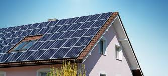
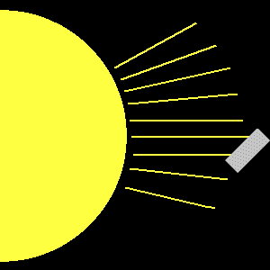

Blog

By Julian Spector | October 5, 2019
The newness of mainstream consumer solar power poses a challenge. If you want to buy a car, for instance, there are plenty of people who’ve done it and can tell you how the process works. Putting solar panels on your roof costs as much as a car, but the cohort of...Read more
Want Solar Panels on Your Roof? Here's What You Need to Know
By Julian Spector | October 5, 2019
The newness of mainstream consumer solar power poses a challenge. If you want to buy a car, for instance, there are plenty of people who’ve done it and can tell you how the process works. Putting solar panels on your roof costs as much as a car, but the cohort of...Read more
.jpg)
What are solar panels?
By Christiano Rodriguez | October 3, 2019
Solar panels are devices that convert light into electricity. They are called "solar" panels because most of the time, the most powerful source of light available is the Sun, called Sol by astronomers. Some scientists...Read more
How efficient are solar panels?
By Lionel Abraham | October 2, 2019
DS1's solar panels convert 22% of their available energy into electrical power. This may not sound very good, but it is much better than most solar panels. Most solar panels on people's houses, for exam...Read more

600 MW DESERT solar factory built in turkey by J.v.G. technology GmbH.
By Benjamin Mendy | October 2, 2019
This clip www.youtube.com/watch?v=lm3Opnjr1Xc shows a factory big size of up to 600 MW for DESERT solar modules from washing glass to final hipot tester...Read more

By Samuel Peters | July 15, 2019
The amount of power available to a solar panel is proportional to the amount of light that reaches it. The more light it gets, the more power it prod...Read more
Why do solar arrays need to be oriented towards the Sun?
By Samuel Peters | July 15, 2019
The amount of power available to a solar panel is proportional to the amount of light that reaches it. The more light it gets, the more power it prod...Read more
Recent Posts
OCT 5 | 9.00AM
OCT 3 | 9.00AM
OCT 5 | 9.00AM
OCT 3 | 11.30AM
JUL 15 | 4.47PM
JUL 10 | 1.00PM
JUL 8 | 9.25AM
JUL 3 | 6.00PM